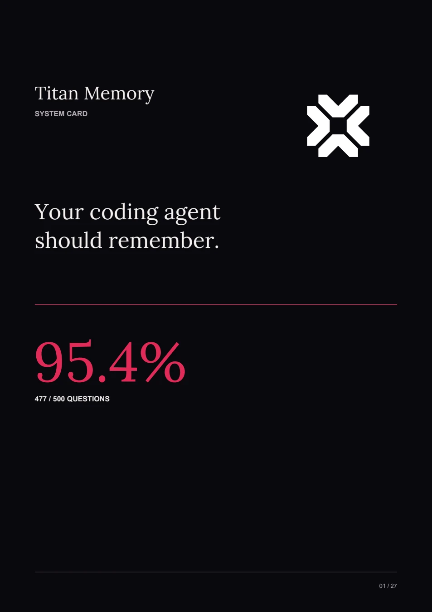
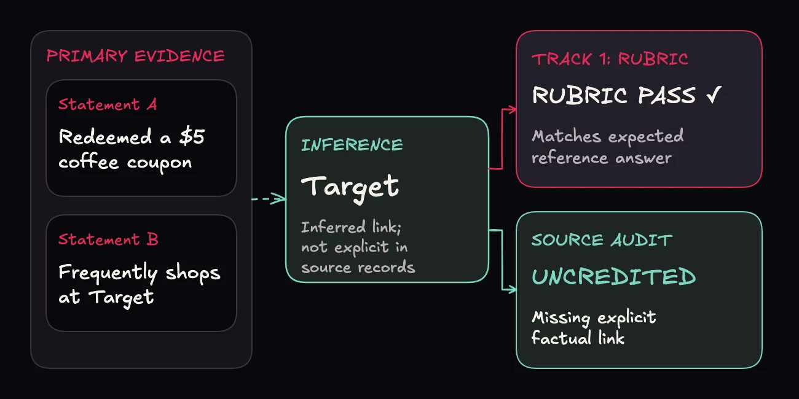
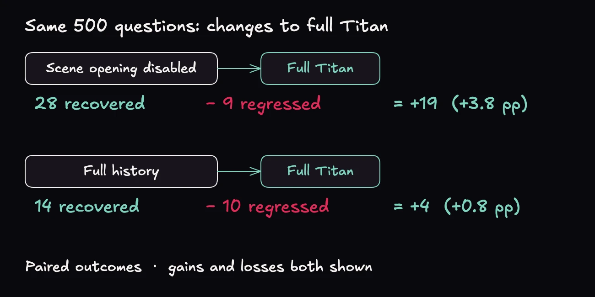
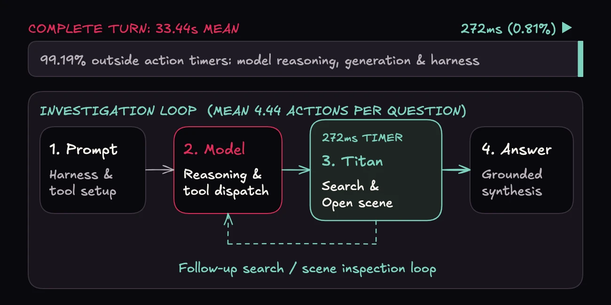

95.4% on LongMemEval-S.
500 multi-session questions across ~40 sessions per case. Titan pairs compact semantic memory leads with full raw conversation scenes in local SQLite under the official LongMemEval benchmark rubric.
Results at a glance.
500 questions. Answers checked against their sources.
Evaluated under official LongMemEval rubric with GPT-6 Astra/high replacement judge.
406 fully supported answers + 2 minor citation defects directly verified against primary dialogue scenes.
56 / 56 rubric passes on assistant instructions across extended multi-session histories; source audit credit is 55/56 (98.2%).
996 exact original dialogue quotations verified character-by-character from opened scenes.

System card
Results, source audit, methods, and runtime measurements.
Results by task.
Above 90% rubric accuracy in every category.
Answers and evidence.
Correct answers and source support, measured separately.

Figure 1: Dual-track evaluation comparing semantic rubric agreement to strict evidentiary source audit (worked example Case 002).
Answers fully and explicitly supported by primary conversational evidence opened by the investigator.
Both supported: 1 inexact quotation among 997 supplied, and 1 answer with an omitted historical citation.
Answers requiring plausible contextual interpretation or unstated assumptions; 49 passed rubric, 5 did not.
Primary conversational records left specific parameters ambiguous or unstated in source dialogue.
3 retrieval omissions, 1 incorrect event timeline resolution, and 1 partial stale estimate across all 500 questions.
In Case 002, dialogue mentioned a $5 coupon and shopping at Target. The investigator inferred Target, matching the benchmark reference; however, the explicit link between the coupon and Target was never formally stated in the primary text. The rubric marked reference agreement, while the strict audit classified it as supported conditional. Of 92 uncredited cases, 87 stemmed from ambiguous or conditional dialogue where the model agreed with the rubric on 71 cases and missed 16; only 5 were technical source failures.
Comparing memory access.
500 questions · Luna/xhigh reader · Terra/high judge.
Semantic search, recent scans, and full scene navigation enabled. Strict original attempt: 446/500 (89.2%).
Supplies original unindexed history without Titan tools. Strict original attempt: 456/500 (91.2%).
Retains search passages, but scene opening and neighbor navigation are disabled. Strict original: 423/500 (84.6%).

Figure 2: Paired rubric outcomes on the same 500 cases. Full Titan recovered 14 cases and regressed on 10 vs full history (net gain of 4 cases, +0.8 pp).
The primary comparison archives interrupted incomplete attempts and scores their resumed attempts (no valid answer was regenerated). A strict sensitivity rule that counts interrupted unfinished original attempts as zero scores Full History at 91.2% (456/500) and Full Titan at 89.2% (446/500), which reverses the primary ranking. Readers, judges, and timing scopes also differ from the earlier Sol run (GPT-6 Luna reader vs GPT-6.1 Sol reader; Terra judge vs Astra judge), and these results are cross-run observations rather than a controlled single-variable ablation.
Where the time goes.
272ms memory timers per question; 33.44s complete reader turn.

Figure 3: Execution time scopes. Complete reader turn (33.44s mean) compared to internal Titan memory action scope (272ms mean across 4.44 actions).
Internal Titan action timer: 272ms
Summed internal SQLite retrieval, neighbor traversal, and candidate serialization. Across 2,220 actions: searches averaged 108.7ms, scene opens averaged 3.57ms, and recent scans averaged 5.34ms. This is not the end-to-end user wait time to answer.
Complete reader turn: 33.44s
Measures the full GPT-6.1 Sol/high reader turn including multi-step model thinking, tool generation, network round trips, and answer formulation. Median turn was 30.06s; p95 was 58.84s.
| Token category | Full history baseline | No scene opening | Full Titan Memory |
|---|---|---|---|
| Total input tokens | 133,246 | 190,081 | 208,090 |
| Cached input tokens | 15,942 (12.0%) | 152,127 (80.0%) | 169,179 (81.3%) |
| Uncached input tokens | 117,304 | 37,954 | 38,911 (66.8% less) |
| Output tokens | 534 | 4,087 | 3,705 |
| Client wall time (mean) | 19.54s | 92.21s | 86.05s (4.40x) |
Methods and limits.
Evaluation setup and limits.
This evaluation was conducted across all 500 LongMemEval-S benchmark scenarios on frozen local stores; performance on unseen tasks or held-out distributions remains to be evaluated.
Measures the configured memory-plus-reader system end-to-end, not isolated retrieval accuracy (not Recall@20) and not LoCoMo.
Some independently published systems report higher LongMemEval-S answer scores under different models, judges, and evaluation protocols (e.g. Recallium 98.4%, Exabase M-1 96.4%).
Sol vs Luna differences are cross-run observations with different judges and accounting, not a controlled model ablation.